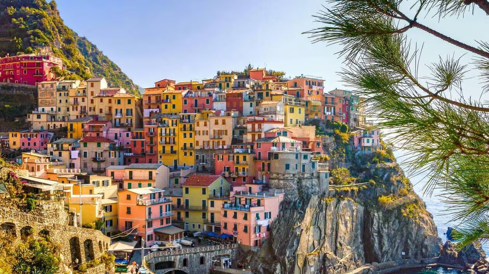
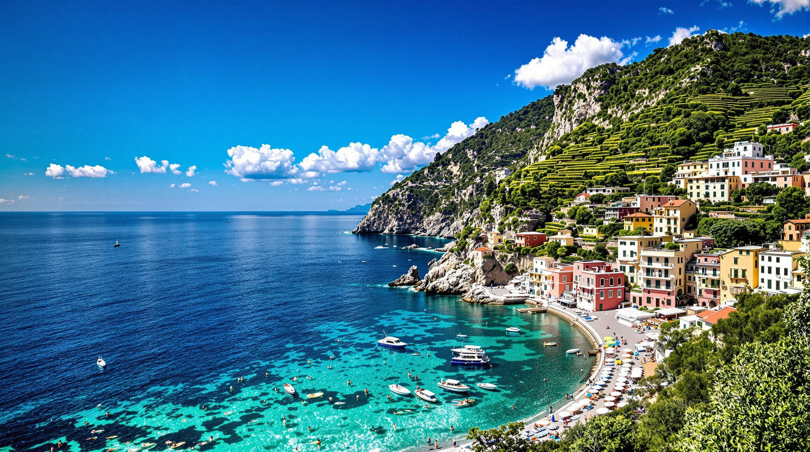
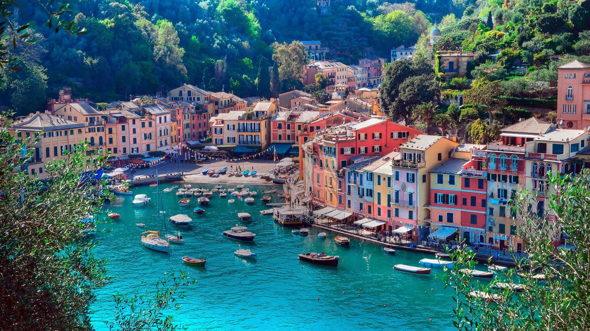

LES CINQ TERRES : MERVEILLE DE L’ITALIE
Du jeudi 29 mai au dimanche 1er juin 2014
| Durée | 4 jours |
|---|---|
| Prix | 499 € |
| Dates | Du jeudi 29 mai au dimanche 1er juin 2014 |
| Région | La Spezia (Ligurie, Italie) |
Jeudi : Votre localité → Région de La Spezia
Départ de votre localité en direction de l’Italie. Déjeuner à Alessandria. Continuation sur Gênes, plus grand port d’Italie, et visite guidée de la ville : Gênes vous dévoilera son tempérament dense et romantique avec son centre historique, sa tradition maritime et ses habitants cultivés au caractère fort. Route pour votre hôtel, dans la région de La Spezia, installation, dîner et logement.
Vendredi : La côte des Cinq Terres
Petit déjeuner et départ avec votre accompagnateur pour La Spezia. Embarquement en bateau pour une excursion sur la côte fleurie des Cinq Terres : une côte méconnue, des petites îles, de tranquilles ports de pêche... Déjeuner en cours de visite. Retour vers La Spezia et votre hôtel en fin de journée, dîner et logement.
Samedi : Golfe de Tigullio
Petit déjeuner et départ avec votre accompagnateur pour une excursion au Golfe de Tigullio : une visite de Santa Margherita Ligure et de Rapallo, élégante station balnéaire de la côte ligure. Puis vous embarquerez pour une balade en bateau de Rapallo à Portofino. De retour à Rapallo, déjeuner puis direction Chiavari et Sestri Levante. Retour à l’hôtel, dîner et logement.
Dimanche : Retour par Suse
Après le petit déjeuner, vous prendrez le chemin du retour. Déjeuner en cours de route et arrêt à Suse pour une dégustation et pour le shopping. Arrivée en fin de journée.
Nos prix comprennent :
- Le transport en autocar grand tourisme.
- Le logement en hôtel 3 étoiles.
- Les repas du déjeuner du jour 1 au jour 4.
- Les visites, entrées et excursions mentionnées au programme.
- Les services d’un guide-accompagnateur les jours 2 et 3.
- L’assurance rapatriement.
Nos prix ne comprennent pas :
- Le supplément chambre individuelle : 60 €.
- Les boissons.
- L’assurance annulation : 20 €.
Formalité :
Carte d’identité en cours de validité.



Prix par personne, base chambre double.